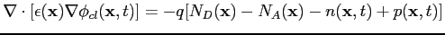
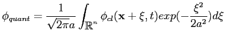

Concerning the quantum effects, while we consider the particles as semiclassical objects, we want to have the possibility of simulating relevant quantum effects in today manufactured semiconductor devices (like the diode tunnel, or the nanoscopic MOSFETs). This is a quite difficult goal, because we need an accurate solution of the Wigner equation to simulate these effects correctly. Unfortunately, the solution of the Wigner equation is a very difficult challenge, both from the point of view of numerical analysis and the point of view of computer resources, because it is an integro-differential equation, with a non-local term for the potential, which is very difficult to solve numerically, even in the one-dimensional case and the solution of such an equation is a function of the phase-space variables and time, which means that it is an enormously expensive solution from the point of view of computer memory. So, we have to use an other approach than the Wigner equation one.
For this purpose, recently, a new interpretation of quantum mechanics has been presented which is, at least at first order, equivalent to the Wigner quantum approach (and to the density gradient approach): this approach is known as @sampthe effective potential method. While in the Wigner, but even in the Schroedinger, quantum theory we consider the particles as wave-like objects (with very strange and unphysical properties, like negative probability, or non-locality...), in the effective potential we keep on considering particles as well-positioned particles in the phase-space, which is actually what we experience in the real world. So, instead of giving a new "definition" of particles we redefine the electrostatic potential. In order to do it we compute the classical electrostatic potential by means of the classical and widely used Poisson equation
|  | (5.1) |
|  | (5.2) |
For more information about this recent method, see the following papers: